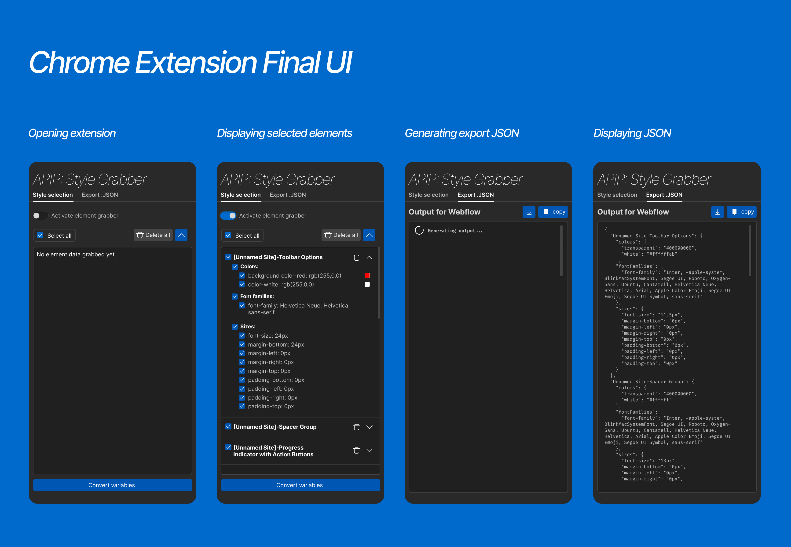

APIP
Kaitlynn Gray, Rachel Lee, Erin Li, Jessica Lin, Joshua Martinez, Yuki Yang
Course: Computer Science Clinic (partnered with Webflow)
Tools: Webflow, React, TypeScript, CSS, Figma
I designed the UI for APIP: The AI-Powered Inspiration Palette Tool, in collaboration with my team members and feedback from Webflow liaisons.
Background
This project was a part of the Harvey Mudd Computer Science Clinic Program, a senior capstone project program with the same weight as a thesis. Students are placed in teams and given a company partner to design a product for, with support from company liaisons.
For my Clinic project, I teamed with 5 Computer Science majors and the company Webflow to design a product for Webflow users. Webflow is a website-focused company where users can build, host, and optimize their websites.
Problem
Webflow has many tools to use to build the perfect website. However, this large array of tools, combined with a blank website canvas to work on, may lead users to feel overwhelmed and unsure where to start. Our Webflow liaisons called this the “blank slate” problem.
{kind=link}
A screenshot of a blank website page in the Webflow Designer.
Our team addressed the blank slate problem by creating a way for users to bring in colors, fonts, and padding styles from websites they are inspired by to provide support for their Webflow website designs. To do so, we created a Chrome extension and a Webflow extension to help users upload CSS variables to the Webflow website building area: the Webflow Designer. We called our project APIP: The AI-Powered Inspiration Palette Tool (APIP).
Motivation
After viewing the Webflow Designer tutorials, I had an idea – what if we could take a screenshot* of a website we liked and use AI to generate code we could use to style our own websites in the same way? We could then use these styles in the Webflow Designer.
*A few months later, I’ll end up attending a Computer Science talk and learn there is a company actually pouring time and money into that same idea – unrelated to me – right now.
After much research, we learned that using AI in this way would lead to incorrect results. So, we iterated on our product until we settled on creating a Chrome and Webflow extension.
With these, users could:
- Open an APIP Chrome extension while on their favorite website
- Click on styling elements they liked, and have these stored in an AI-generated .JSON file
- Take this stored information, download it, and
- Upload it into the APIP Webflow extension to use on their Webflow website!
Initial Figma UI Design
My team member Rachel and I created a Figma wireframe that built out the team’s ideas on key features APIP would have, and how the information would be organized. In the image below, the Chrome Extension wireframe is left of the arrow, and the Webflow Extension wireframe is on the right.
{kind=link}
Using Webflow UI Style
I wanted to create a visual tie between APIP and the Webflow website by using design styles from Webflow. This way, Webflow users would know that APIP and Webflow are connected. So, I used these screenshots from the Webflow Designer as inspiration to convert our wireframe designs to match the Webflow user interface (UI).
Note: The screenshot on the left with the variables will appear once more in the first iteration of the Webflow extension below. I use this to visualize how Webflow displays its variables to better align our UI with theirs.
{kind=link}
{kind=link}
UI Redesign
Combining the above inspiration and my research into Webflow design resources, I redesigned the team Figma wireframe to closely align with the Webflow UI style.
Chrome Extension
{kind=link}
Webflow Extension
{kind=link}
Chrome Extension Iteration
With our new design direction established, we had one job left to do: refine our UI! I created the following Figma mockups to represent how our UI evolved throughout the project.
1st Iteration
All buttons were placed at the top, allowing users to find them in one place (first image). We also opted for a default styling for the checkboxes (second image) and added a copy icon on the Export JSON page (third image). Each element received a “remove” button so users could remove specific elements (second image).
Highlighting Feedback: Our liaisons advised that we reduce the text we use in our UI. Here, we removed the text surrounding the “convert to JSON” button by renaming it to “Convert Variables” and removing the “ready to transfer your variables?” question above it.
{kind=link}
2nd Iteration
We made it easier for users to see and locate their clicked elements by adding a collapse/expand feature. With a new set of buttons, we created a tie between the buttons and their uses by aligning the buttons influencing the clicked elements area (select / remove / collapse and expand) above the area and placing the “convert variables” on a different line (first and second image).
Continuing our efforts to reduce text, we changed the “remove” button on each element to a trashcan icon. With icons, users could learn key information about button uses without needing to read each button. Here, I represent it with a red, rounded rectangle.
Highlighting Feedback: Our liaisons also pointed out that Webflow uses sentence-case for their text. Thus, I changed the tab names, “activate element grabber” switch, and buttons to sentence case. Ex: “Style Selection” became “Style selection” instead.
{kind=link}
3rd and 4th Iterations
Highlighting Feedback: Our liaisons advised that we move the “convert variables” button to the bottom of the page. Now, the button would be in a more intuitive area, as it was only used after a user finished choosing all elements.
We changed “remove all” to “delete all”. (first image and second image). Additionally, we made the collapse/expand button easier to understand by simplifying it to one carrot pointing up or down (compare the first and second images).
We also added a trash can icon to the delete button. This icon served as a delete button for each clicked element, so adding the icon to the new delete button created a visual tie between their uses (third image).
{kind=link}
Webflow Extension Iteration
1st Iteration
Completed after I converted the initial wireframe to the Webflow UI style, we experimented with combining the import and create variables pages on the same screen.
Note: The bottom half area, starting with “Component 1” and ending with “+ New variable,” is not my own. Instead, it is a screenshot from the Webflow Designer that I used to visualize how Webflow displays their variables! You may recognize this screenshot from the “Using Webflow Style” section above.

2nd Iteration
We decided to move forward with having both pages visible. However, we placed them side-by-side to better fit in the Webflow Designer window area. We brought in the style of the darker box to display the generated variables to match the rest of our UI.
{kind=link}
Final Iteration
This is the final Figma iteration before our final UI design! Here, we focused on using UI elements to guide users through the steps they needed to take. We added numbers to each side to establish an order of use.
I also experimented with using button colors to guide users through the order of actions they should take. Blue buttons could be pressed, while grey buttons would be locked.
In the first image, the single blue button would guide users to import or upload their .JSON file (first image). Next, the “Process .JSON” button would light up, encouraging users to press it (second image). Finally, with the .JSON processed, the “Create variables” button would unlock, successfully guiding users through uploading their selected variables (third image).
{kind=link}
Final Figma UI
After months of iteration from the first Figma mockups, I created the following Figma mockups of our final UI design.
For the Chrome Extension, I made sure to replicate small details like the loading wheel in the “Generating export .JSON” mockup, though I simplified our delete icon to one that was easier to create.
{kind=link}
For the Webflow Extension, I replicated the three different states a user could encounter when processing their .JSON:
- A successful process
- Creating a variable collection to organize their new variables
- Receiving an error from one of their variables
We did not end up using the greyed-out buttons, though we continued using the numbered sections to guide the user.
{kind=link}
Screenshots of Live APIP
Below are screenshots of the actual APIP Chrome and Webflow Extensions. I collaborated with my team members to program the UI using Tailwind CSS, CSS3, and TypeScript. Special thanks to Erin for polishing the UI code!
Chrome Extension
{kind=link}
{kind=link}
{kind=link}
See it in use!
{kind=link}
Webflow Extension
{kind=link}
{kind=link}
{kind=link}
Wondering where the gradient-style blue buttons came from? They are from Webflow! Throughout the design process of converting APIP to the Webflow style, I wanted to use the button styling found on the Webflow main site. After some digging using the inspect tool (and a little help from APIP), I was able to locate the button styling and use it here!
Learnings
Through this project, I learned how to create mockups, wireframes, and user interfaces in Figma. With my design work, my teammates were able to have a guide when programming the user interface. My team and I successfully translated these Figma mockups into working code.